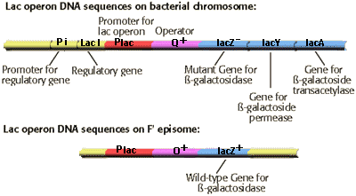

Molecular Genetics of Prokaryotes Problem Set
Problem 7: Regulation of lac Z gene on an F' episome
Tutorial to help answer the question
| How would you describe the regulation of lactose metabolism in the cells described in problem 5 that were able to grow on minimal media with lactose as a nutrient? |
Tutorial
Result of conjugation
Following conjugation the "female" strain with a genotype of lac Z met met bio receives an F' fertility factor and becomes "male." The placO lac Z DNA sequence is on the episome. The resulting cell is partially diploid for segments of the lac operon. The lac operon sequences on the bacterial chromosome and F' episome are shown in the diagram: bio receives an F' fertility factor and becomes "male." The placO lac Z DNA sequence is on the episome. The resulting cell is partially diploid for segments of the lac operon. The lac operon sequences on the bacterial chromosome and F' episome are shown in the diagram:
 All three structural genes required for lactose metabolism are present in their wild type form. The lac Y and lac A genes are located on the bacterial chromosome. The lac Z gene is present on the F' DNA, and is dominant to the lac Z gene on the bacterial chromosome.
|
RNA synthesis
|
RNA synthesis from the structural genes is controlled by normal regulatory sequences. The normal lac repressor is transcribed from the lac I gene on the bacterial chromosome. The repressor protein is constitutively expressed, and accumulates at a level of approximately 10 molecules/cell. Repressor proteins will bind to the operators on both the bacterial chromosome and F' episome when lactose is absent, preventing synthesis of mRNA.
When the inducer, either lactose or allolactose is present, the inducer binds to the repressor causing an allosteric switch to a conformation that does not bind the operator DNA sequence. Transcription from the plac promoters on both the chromosome and F' episome is initiated. |
Summary
| In summary, all normal mechanisms for regulation of the lac operon expression of both the chromosomal and episomal copies of the operon are present. |


University of Arizona
Updated: July 15, 1999
Contact the Development Team
http://biology.arizona.edu
All contents copyright © 1998-99. All rights reserved.